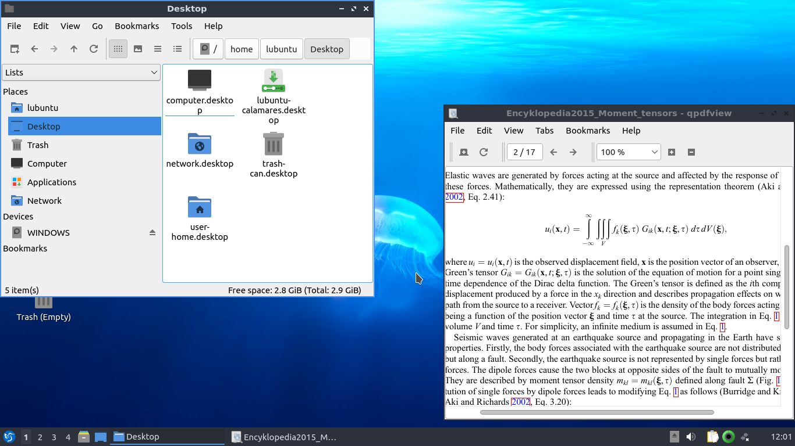
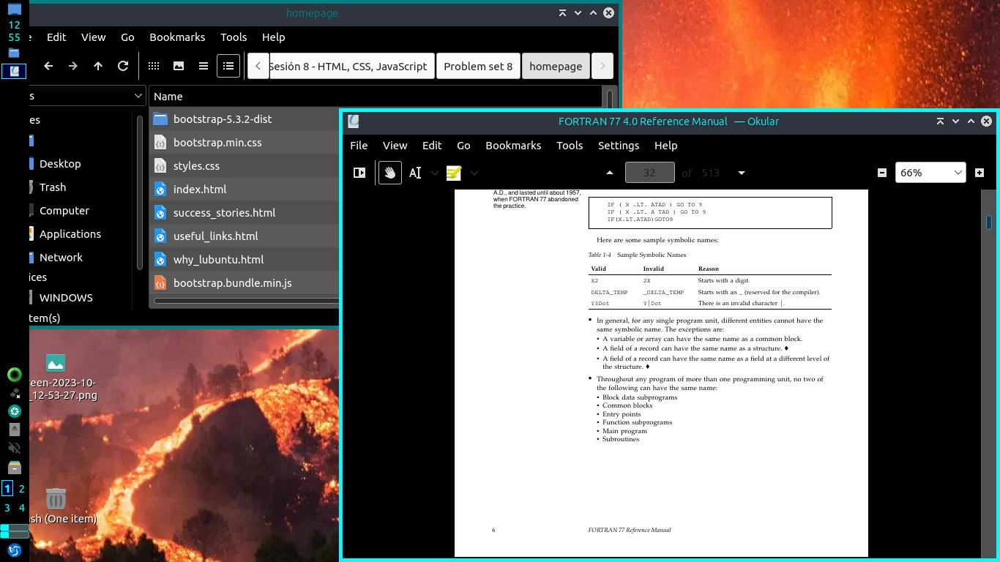

Why Lubuntu?
- Based on Ubuntu.
Any programme that works on Ubuntu will run on Lubuntu.
- Light (for today's standards).
Lubuntu's lack of bloatware makes it possible to give older computers a second life.
- Easy to use.
A simple, clean and tidy environment will help you feel at home within days!
- Highly customisable.
Don't like the windows' edges? Want to move the taskbar to the left, move the clock to its top, make it show the temperature of the CPU? Make the changes you want!
- Up to date.
Updates are available every week, and they won't slow down your computer over time.
- Able to run Windows programmes.
Although it might be a little bit tricky sometimes, it's possible to run Windows executable files if you download a programme called 'Wine'.
- It's FREE!
Why pay for an OS that will soon get obsolete when you can get open-source alternatives that can keep your computer working and up-to-date for a lot longer?
- Not as common as other operating systems.
If you have to fix something, you'll possibly need to take a look at forums like Stack Overflow, Ask Ubuntu or Lubuntu's official forum, and - unfortunately for some users - most of the information is in English.
Moreover, you might have to use the terminal even though you could feel a bit overwhelmed at first and - like on any OS - it's easy to mess up if you don't know what you're actually doing; however, it only takes documentation (there's a lot of it on the Internet) and a tiny little bit of practice to start feeling comfortable using it, so don't worry too much.
- Not designed for smartphones.
You might want to look at alternatives such as Mobian.
- No support for 32-bit computers.
It was interrupted a few years ago, so you might want to try other distros that still support 32-bit computers. Debian is a good example.
- Some might find its appearance a bit too simple and miss the decorations of their former OS.
Lubuntu is meant to be lightweight in order to make it possible for older computers to run it without any issues, so including those little visual effects here and there require more RAM and CPU usage and this might contradict Lubuntu's design principles.

If the visual appearance of an OS is important to you, don't worry: you can either change the desktop environment and/or the window manager, or you can try a different Linux distribution - and there are dozens of them!
